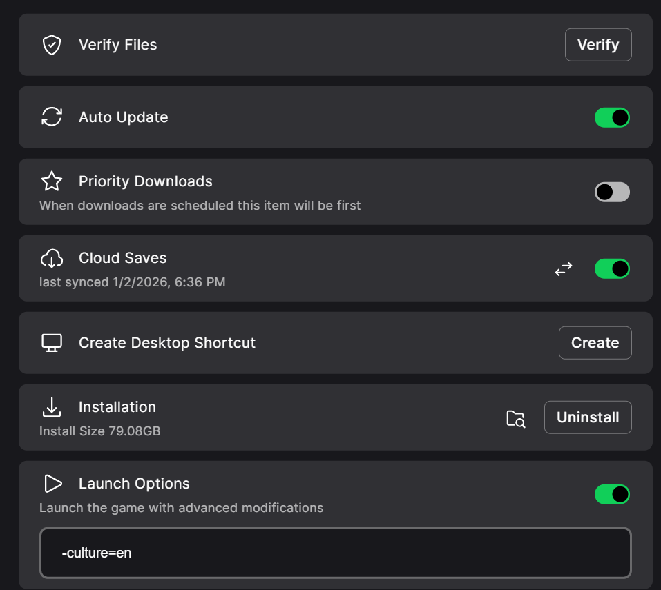

本文记录 Epic 平台下修改《霍格沃茨之遗》语言的正确方法，供后续查阅。
Epic 平台《霍格沃茨之遗》修改语言 / 字幕语言方法
最近 Epic Games 免费赠送了《霍格沃茨之遗（Hogwarts Legacy）》，
但安装并进入游戏后发现一个问题：无法在游戏内设置中修改语言或字幕语言。
在网上搜索解决方案时，发现绝大多数教程都是 针对 Steam 版本 的，
对 Epic 平台完全不适用，容易误导。
本文记录 Epic 平台下修改《霍格沃茨之遗》语言的正确方法，供后续查阅。
一、Steam 平台常见方法（⚠️ Epic 不适用）
在 Steam 版本中，通常可以通过修改 Steam API 配置文件来实现语言切换。
Steam 常见操作步骤
-
打开游戏安装目录：
Engine\Binaries\ThirdParty\Steamworks\Steamv154\Win64\
-
找到并编辑文件：
steam_api64.ini
-
修改语言参数，例如：
Language=schinese
其中：
- english 表示英语
- schinese 表示简体中文
-
保存文件并重新启动游戏。
❌ 为什么该方法对 Epic 无效？
Epic 平台中：
-
不存在 steam_api64.ini 文件
-
目录下通常只有：
steam_api64.dll
因此，通过修改 Steam API 配置的方式在 Epic 版本中是无效的。
二、Epic 平台的正确修改方法（推荐 ✅）
Epic 版本的《霍格沃茨之遗》基于 Unreal Engine，
语言需要通过 启动参数（Launch Options） 指定。
原理说明（简要）
Epic 启动游戏时，会将启动参数传递给 Unreal Engine，
其中 -culture= 参数用于指定游戏使用的语言 / 本地化文化。
三、Epic 平台修改语言的具体步骤
操作步骤
-
打开 Epic Games Launcher
-
进入 游戏库
-
找到 《霍格沃茨之遗》
-
点击右侧 “···” → 管理
-
勾选 Launch Options（启动选项）
-
在输入框中添加启动参数，例如：
-culture=zh
示例界面如下：

四、常用语言启动参数对照表
| 语言 | 启动参数 |
|---|---|
| 简体中文 | -culture=zh |
| 英语 | -culture=en |
| 日语 | -culture=jp |
| 法语 | -culture=fr |
| 德语 | -culture=de |
| 西班牙语 | -culture=es |
其他语言代码可自行搜索：
Unreal Engine culture codes
五、修改完成后的效果
重新启动游戏后，
游戏界面、字幕和语音（若支持）将自动切换为指定语言。
示例效果：

六、总结
- ❌ Steam 的 steam_api64.ini 修改方式 不适用于 Epic
- ✅ Epic 平台应使用 启动参数 -culture=xx
- 本方法 无需修改游戏文件，安全稳定
- 适用于 Unreal Engine 系列游戏，具有通用性
如果你也是 Epic 平台用户，希望这篇记录能帮到你。